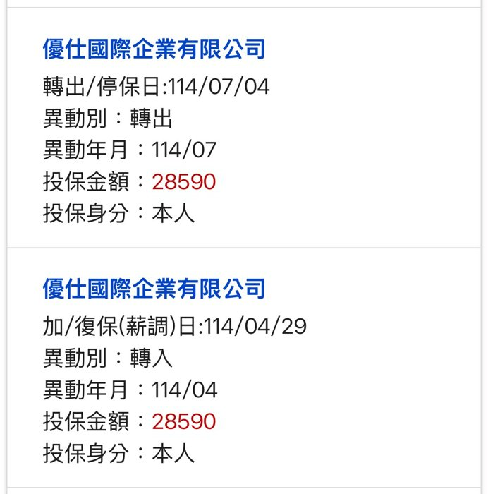
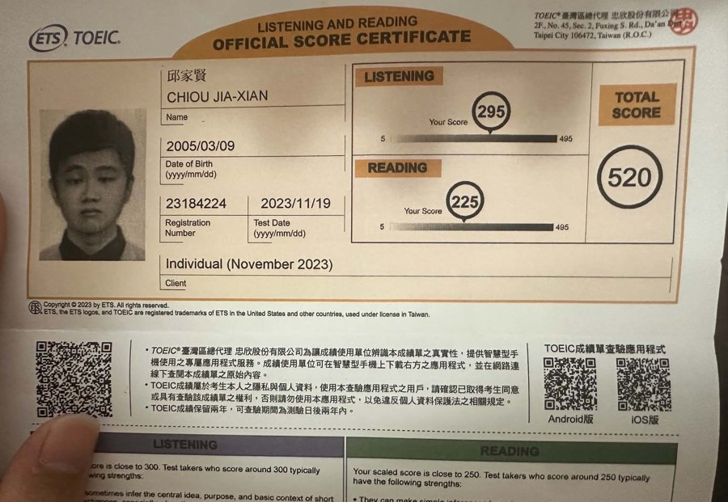

RESUME / 網頁版型規劃設計
你好，我是邱家賢
“盡力享受生活，努力學習向上，記住今天就是自己餘生最年輕的一天。”
目前就讀中原大學資訊管理學系二年級，喜歡把複雜的流程拆成一步一步可以檢查的步驟。 除了程式設計、資料庫與資料結構等本科課程之外，我也曾在微星科技的製造現場工讀， 親眼看到「流程」如何影響品質；並在吉他社和學長姐一起做音樂，練習把想法變成作品。
- 個人特質細心、有耐心，願意把重複的動作做到一致
- 優點執行力強，交代的事情會追到完成
- 興趣彈吉他與編曲、研究電腦硬體
RESUME / 網頁版型規劃設計
“盡力享受生活，努力學習向上，記住今天就是自己餘生最年輕的一天。”
目前就讀中原大學資訊管理學系二年級，喜歡把複雜的流程拆成一步一步可以檢查的步驟。 除了程式設計、資料庫與資料結構等本科課程之外，我也曾在微星科技的製造現場工讀， 親眼看到「流程」如何影響品質；並在吉他社和學長姐一起做音樂，練習把想法變成作品。
程度依實際修課與實作結果自行評估
簡報製作與口頭發表
CSS / HTML / Java / Python 程式設計
吉他彈奏與簡易編曲
中文精通、英文 TOEIC 520
每項經歷附佐證資料，可點擊看大圖

派遣工讀生｜產線組裝與品檢
我透過派遣公司進入微星科技製造部門，負責筆記型電腦與微型電腦的零組件組裝、 BIOS 設定與出貨前功能檢測，每天依標準作業流程完成指定台數，遇到外觀瑕疵或組裝異常 時填寫異常回報單交由線長確認。這段經驗讓我第一次看到流程如何影響良率：前一站的螺絲 沒鎖到位，後面幾站都得重工。也因此我更理解為什麼系統要留下紀錄、每一步都要能被追溯， 這和資料庫課學到的設計觀念完全對得上。
社員｜活動參與與成果發表演出
加入吉他社後，我固定參加每週社團大會的團練，在學長姐帶領下從基礎和弦、節奏刷法 一路學到簡易編曲與錄音，並協助期末成果發表的曲目排練與器材準備。和學長姐一起做音樂 讓我學到兩件和程式很像的事：一是「版本」很重要，同一首歌每改一次都要留有紀錄才不會亂； 二是「配合」比個人表現更關鍵，只要有一個人節奏偏掉，整團聽起來就會散掉。這段經驗也讓 我在陌生場合講話比較不緊張，對之後做專題報告幫助很大。

自學準備的考生
為了在求職時拿出具體的英語能力證明，我自行規劃讀書進度，以每天固定練習聽力與閱讀 各一回的方式準備多益，最後考取總分 520 分（聽力 295 分、閱讀 225 分）。準備過程中 發現自己最大的問題不是單字量，而是時間分配，閱讀題常常做不完；於是我改成先看題目 再回頭找關鍵句，答題速度才穩定下來。這件事讓我意識到方法往往比時間更能決定結果， 之後念資料結構時我也用同樣方式，先理解規則再反覆練題。
歡迎實習機會與專題合作，來信我會盡快回覆